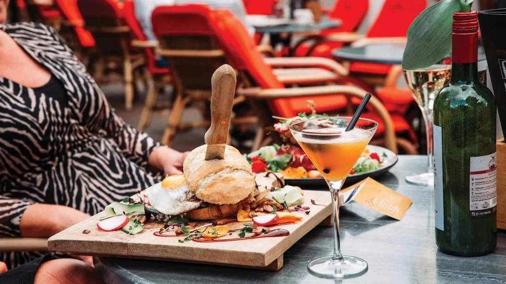

Lunchen in de buurt

Wilt u lekker uit eten in Tiel? Dan is Hart van de Betuwe dé plek voor een smaakvolle en gastvrije ervaring in Tiel.
Restaurant Hart van de Betuwe is al jarenlang een begrip in Tiel en trekt gasten vanuit alle regio’s. Of u nu in Tiel woont of een dagje Tiel bezoekt, u bent bij ons altijd welkom voor een heerlijke lunch, borrel of diner.
Ons restaurant in Tiel ligt op een unieke locatie: aan het centrale plein in Tiel, waar ook het bekende beeld van Flipje staat. Hier proeft u niet alleen van onze gerechten, maar ook de sfeer die Tiel zo bijzonder maakt.
Bent u opzoek naar lekker eten in Tiel, een gezellige borrel in Tiel of gewoon een warm welkom in Tiel? Kom dan langs bij Hart van de Betuwe. MEER DAN WELKOM!
Locatie
Gelegen aan het centrale plein van Tiel, waar het bekende beeld van Flipje trots prijkt, bied Hart van de Betuwe een sfeervolle plek om te genieten van Tiel op zijn best. In het Hart van Tiel combineren wij gastvrijheid, smaakvolle gerechten en een warme ambiance tot een complete beleving.
Ons restaurant in Tiel staat bekend om goed eten, gezellige borrels en een ontspannen sfeer. Of u nu buiten wilt zitten op ons ruime, deels (in de winter) verwarmde terras, of liever binnen plaatsneemt in onze knusse en stijlvolle zaak. In Tiel bent u bij Hart van de Betuwe altijd MEER DAN WELKOM.
Menu
menukaart van Hart van de Betuwe is verrassend gevarieerd en biedt voor ieder wat wils. Of u nu zin heeft in een lichte lunch, een smakelijk hoofdgerecht of iets lekkers voor de kleintjes, bij Hart van de Betuwe vindt u altijd iets dat bij uw wensen past. Een perfecte plek om met het hele gezin te gaan uit eten in Tiel.
Openingstijden
In Tiel staan ze 7 dagen per week met veel enthousiasme voor u klaar. Voor een heerlijk diner bent u bij Hart van de Betuwe van donderdag tot en met zondag van harte welkom. Op de overige dagen kunt u bij Hart van de Betuwe terecht voor een kopje koffie met gebak, smakelijke lunch of gezellige borrel.
Contactgegevens:
www.hartvandebetuwe.nlhart@debetuwe.nl
0344 613 540